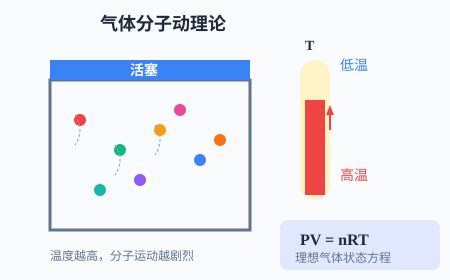
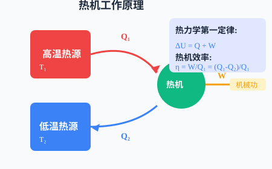

分子動理論、氣體實驗定律、熱力學第一定律


調整活塞位置，改變氣體體積，觀察壓強的變化（溫度不變）！
0 Pa
0 L
0
觀察高溫物體向低溫物體的熱傳遞過程！
80 °C
20 °C
0 J
阿伏加德羅常數，分子直徑數量級
等溫變化
等容變化，溫度用熱力學溫度
$R = 8.31$ J/(mol·K)，普適氣體常量
內能變化等於吸熱加做功
c為比熱容，L為汽化/熔化熱
Q₁為吸熱，Q₂為放熱
物體由大量分子組成；分子永不停息地做無規則運動（布朗運動）；分子間存在相互作用力。溫度是分子平均動能的標誌。
理想氣體是一種理想化模型：分子本身大小忽略，分子間無作用力（除碰撞瞬間）。理想氣體狀態方程PV=nRT是熱學核心公式。
$\Delta U = Q + W$，符號規定：吸熱Q>0，放熱Q<0；外界對氣體做功W>0，氣體對外做功W<0。內能是狀態量，功和熱量是過程量。
熱量不能自發地從低溫物體傳到高溫物體；不可能從單一熱源吸熱全部做功而不引起其他變化。揭示了宏觀熱現象的方向性。